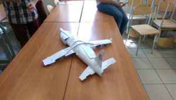

Post archive
Warsztaty SCRUM
W ostatnim tygodniu na uczelni mieliśmy warsztaty z Scrum. Jeden prowadzący zalecił, byśmy się zapisali w ramach zajęć na te warsztaty, ponieważ współgrają z tematyką zajęć. W tym wpisie chcę się podzielić moimi wrażeniami z takiego warsztatu.
Scrum
Scrum sam w sobie jest recepturą na zwinne tworzenie jakiejkolwiek rzeczy od samolotów po oprogramowanie komputerowe. Technikę tą można zastosować do jakiegokolwiek zadania ze względu na postawione reguły bez narzutów na sposób ich realizacji.Warsztaty
Spotkanie zostało poprowadzone przez lokalną firmę świadczącą usługi tworzenia oprogramowania. Całość była podzielona na 3 etapy. Pierwszy teoretyczny, który przedstawiał podstawową kaskadową metodykę tworzenia rzeczy w porównaniu do metodyk zwinnych. Kolejny etap był praktyczny, zostaliśmy podzieleni na zespoły, które miały za zadanie zbudować samolot przy wykorzystaniu kartek papieru, taśmy klejącej, nożyczek, pisaków. Cały proces budowy przebiegał zgodnie z metodyką Scrum. Mieliśmy zbudować Boeinga, posiadający trzy piętra, siedzenia, silniki, radar, podwozie itp. Na samym początku nie wyobrażałam sobie jak to będzie wyglądało. Finalnie zadanie po zadaniu zdołaliśmy zbudować nawet fajnie wyglądający samolot. Niżej załączam zdjęcie samolotu, jaki udało nam się zbudować w godzinę.{kind=link}
